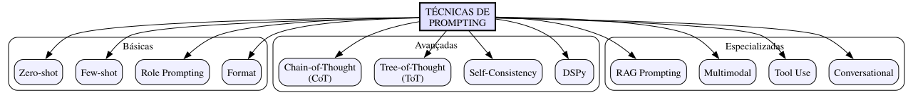

O Problema
Você já deve ter notado: a mesma pergunta pode gerar respostas completamente diferentes dependendo de como você a formula.
Exemplo:
- "Me fale sobre gatos" → resposta genérica
- "Quais as 3 raças de gatos mais populares no Brasil e por quê?" → resposta específica
A diferença? O prompt.
Mas há muito mais por trás de "perguntar melhor". Este artigo vamos explorar a ciência e a arte do Prompt Engineering, com fundamentação teórica e técnicas avançadas validadas por pesquisa.
Fundamentos Teóricos
O que é Prompt Engineering?
Definição formal: Prompt Engineering é a prática de projetar e otimizar inputs (prompts) para modelos de linguagem com o objetivo de maximizar a qualidade, relevância e utilidade das respostas geradas.
Base teórica: O Prompt Engineering emerge da descoberta de que modelos de linguagem grandes (LLMs) exibem capacidades emergentes que não foram explicitamente programadas (Wei et al., 2022). A forma como instruímos o modelo - o prompt - ativa diferentes regiões do espaço de parâmetros, resultando em comportamentos distintos.
Por que funciona:
Os LLMs são treinados em dados de alta qualidade (artigos, código, documentação). Quando damos um prompt bem estruturado, estamos:
- Localizando conhecimento: Ativando representações relevantes no espaço de parâmetros
- Definindo contexto: Estabelecendo o "modo de operação" do modelo
- Fornecendo padrão: Demonstrando o formato esperado da resposta
Referência: Wei, J. et al. (2022). "Chain-of-Thought Prompting Elicits Reasoning in Large Language Models". arXiv:2201.11903
Taxonomia de Técnicas de Prompting

Técnicas Básicas
1. Zero-shot Prompting
Definição: Pedir ao modelo para executar uma tarefa sem fornecer exemplos prévios.
Quando usar:
- Tarefas simples e diretas
- Quando você não tem exemplos disponíveis
- Para testar a capacidade "natural" do modelo
Exemplos:
Traduza para inglês: "Bom dia"
Resuma o seguinte texto em uma frase: [texto longo aqui]
Referência: Brown et al. (2020) demonstraram que modelos suficientemente grandes podem executar tarefas sem exemplos (few-shot learning de verdade), sugerindo que o conhecimento necessário já está nos parâmetros. arXiv:2005.14165
2. Few-shot Prompting
Definição: Fornecer exemplos de input-output antes de pedir ao modelo para executar a tarefa.
Exemplo:
Traduza para inglês: "Gato" → "Cat" "Cachorro" → "Dog" "Pássaro" → "Bird" "Peixe" → ?
Número ideal de exemplos:
| # Exemplos | Vantagens | Desvantagens |
|---|---|---|
| 1-2 | Econômico em tokens | Pode ser pouco para padrões complexos |
| 3-5 | Bom equilíbrio | Padrão comum na literatura |
| 6+ | Melhor para tarefas difíceis | Custo alto de tokens; diminishing returns |
3. Role Prompting (System/Role Prompting)
Definição: Atribuir um papel ou persona ao modelo para contextualizar suas respostas.
Exemplo:
Você é um professor de matemática do ensino médio, especializado em explicar conceitos complexos de forma simples. Seu aluno está tentando entender derivadas pela primeira vez.
Técnicas Avançadas
4. Chain-of-Thought (CoT) Prompting
Definição: Instruir o modelo a "pensar passo a passo" explicitando o raciocínio antes de dar a resposta final.
Base teórica: Wei et al. (2022) descobriram que pedir ao modelo para explicitar o raciocínio melhora drasticamente a performance em tarefas que requerem múltiplos passos lógicos, aritmética e raciocínio causal.
Como funciona:
SEM CoT: Pergunta: Roger tem 5 bolas de tênis. Ele compra mais 2 latas de 3 bolas cada. Quantas bolas ele tem agora? Resposta: 11 COM CoT: Pergunta: Roger tem 5 bolas de tênis. Ele compra mais 2 latas de 3 bolas cada. Quantas bolas ele tem agora? Resposta: Roger começou com 5 bolas. Ele comprou 2 latas de 3 bolas, então adquiriu 2 × 3 = 6 bolas. No total, ele tem 5 + 6 = 11 bolas.
Referências:
- Wei, J. et al. (2022). "Chain-of-Thought Prompting Elicits Reasoning in Large Language Models". arXiv:2201.11903
- Kojima, T. et al. (2022). "Large Language Models are Zero-Shot Reasoners". arXiv:2205.11916
5. Self-Consistency
Definição: Gerar múltiplos caminhos de raciocínio e escolher a resposta mais frequente (votação).
Quando usar:
- Tarefas com resposta concreta (matemática, factual)
- Quando disponibilidade de tokens não é limitante
- Aplicações que requerem alta confiança
Trade-offs:
- Vantagem: Maior precisão
- Desvantagem: 3-10x mais tokens e tempo
Referência: Wang, X. et al. (2022). "Self-Consistency Improves Chain of Thought Reasoning in Large Language Models". arXiv:2203.11171
6. Tree-of-Thought (ToT)
Definição: Explorar múltiplos caminhos de raciocínio em paralelo, avaliando cada um e escolhendo o melhor.
Base teórica: Yao et al. (2023) propuseram ToT como uma generalização do CoT que permite exploração de candidatos de pensamento em vez de apenas seguir um caminho linear.
Referência: Yao, S. et al. (2023). "Tree of Thoughts: Deliberate Problem Solving with Large Language Models". arXiv:2305.10601
7. Prompt Chaining
Definição: Dividir uma tarefa complexa em múltiplos prompts sequenciais, onde cada um usa o output do anterior.
Exemplo: Sistema de Escrita de Artigos
CHAIN 1: Research Prompt: "Gere 5 pontos principais sobre [tópico]" Output: Lista de 5 pontos CHAIN 2: Outline Prompt: "Usando os pontos: [lista], crie um outline estruturado" Input: Output do Chain 1 Output: Outline completo CHAIN 3: Write Prompt: "Escreva a seção [X] usando o outline: [outline]" Input: Output do Chain 2 Output: Texto da seção
Framework R-C-E-F Expandido
O framework R-C-E-F organiza os elementos essenciais de um prompt eficaz:
| Letra | Elemento | Descrição | Exemplo |
|---|---|---|---|
| R | Role | Papel/identidade | "Você é um arquiteto de software sênior" |
| C | Context | Situação/Informação | "O sistema precisa processar 1000 req/s" |
| E | Examples | Exemplos (few-shot) | "Exemplo: Input → Output" |
| F | Format | Formato de saída | "Responda em JSON com campos: X, Y, Z" |
| T | Task | Tarefa explícita | "Sugira 3 alternativas de arquitetura" |
| C | Constraints | Restrições | "Máximo 200 palavras por alternativa" |
Template RCEF-TC
# ROLE Você é [papel/identidade]. # CONTEXT [Informação de fundo relevante] # TASK [Tarefa explícita a ser executada] # EXAMPLES [Exemplos de input/output, se necessário] # FORMAT [Formato esperado da resposta] # CONSTRAINTS [Restrições e limitações] # INPUT [Dados específicos para esta tarefa]
Exercícios Práticos
Exercício 1: Refatoração de Prompt
Transforme o seguinte prompt ruim em um prompt eficaz usando R-C-E-F:
Prompt ruim: "Me ajude com código."
📝 Resposta
# ROLE Você é um desenvolvedor Python sênior com expertise em código limpo e boas práticas. # CONTEXT Estou escrevendo uma função que processa dados de usuários de uma API externa. A função recebe uma lista de IDs e precisa buscar dados para cada um. # TASK Analise minha função atual e sugira melhorias de: 1. Legibilidade 2. Performance 3. Tratamento de erros # FORMAT Para cada melhoria, forneça: - Descrição do problema - Código antes/depois - Justificativa # CONSTRAINTS - Mantenha compatibilidade com Python 3.9+ - Priorize soluções simples sobre complexas # INPUT [Código atual aqui]
Exercício 2: Chain-of-Thought
Melhore o seguinte prompt usando Chain-of-Thought:
Prompt original: "Quantos anos um brasileiro nascido em 1990 terá em 2035?"
📝 Resposta com CoT
Pergunta: Quantos anos um brasileiro nascido em 1990 terá em 2035? Vamos pensar passo a passo. 1. Primeiro, identifico o ano de nascimento: 1990 2. Identifico o ano alvo: 2035 3. Calculo a diferença: 2035 - 1990 = 45 4. Verifico: Se nasceu em 1990, em 2035 terá completado ou estará completando 45 anos Resposta: 45 anos.